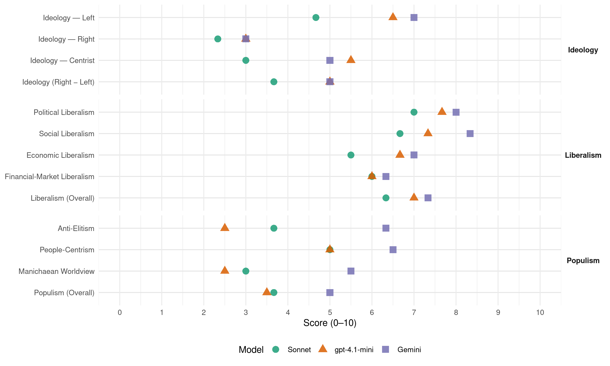

PDSR (Romania, 2000)
manifesto_id 93223_200011
Get full text: This site shows derived annotations and short verbatim quotes only. The full manifesto text is © Manifesto Project / WZB — obtain it via manifesto-project.wzb.eu using the manifesto_id above.
Headline scores
| Dimension | Sonnet | gpt-4.1-mini | Gemini |
|---|---|---|---|
| Populism (Overall) | 3.7 | 3.5 | 5.0 |
| Anti-Elitism | 3.7 | 2.5 | 6.3 |
| People-Centrism | 5.0 | 5.0 | 6.5 |
| Manichaean Worldview | 3.0 | 2.5 | 5.5 |
| Ideology (Right − Left) | 3.7 | 5.0 | 5.0 |
| Liberalism (Overall) | 6.3 | 7.0 | 7.3 |
| Political Liberalism | 7.0 | 7.7 | 8.0 |
| Social Liberalism | 6.7 | 7.3 | 8.3 |
| Economic Liberalism | 5.5 | 6.7 | 7.0 |
| Financial-Market Liberalism | 6.0 | 6.0 | 6.3 |
Evidence per dimension
Economic Liberalism
Gemini · score 7.0 · verified · chunk 1
“dezvoltarea proprietății private ca bază a economiei”
Partidul Democrației Sociale din România a acționat constant pentru dezvoltarea proprietății private ca bază a economiei de piață și expresie economică
Gemini · score 7.0 · verified · chunk 2
“crearea cadrului legislativ necesar funcționarii unei pieței libere”
creșterea competiției prin acordarea de licențe unor operatori și crearea cadrului legislativ necesar funcționarii unei pieței libere în domeniu cu efecte asupra scăderii tarifelor
Gemini · score 7.0 · verified · chunk 3
“Încurajarea nemijlocită a inițiativei private”
neracordate la sistemul de telefonie; Încurajarea nemijlocită a inițiativei private pentru extinderea rețelei
gpt-4.1-mini · score 7.0 · verified · chunk 1
“economia de piață funcționale, bazate pe concurența loială, eficiență, reguli clare”
Construirea unei economii de piață funcționale, bazate pe concurența loială, eficiență, reguli clare, sprijinită de instituții de reglementare capabile să limiteze puterea monopolurilor, indiferent de forma lor de proprietate.
gpt-4.1-mini · score 7.0 · verified · chunk 2
“creșterea economică va fi obținută printr-un set de politici integrate”
În acest context, creșterea economică va fi obținută printr-un set de politici integrate, complementare, menite sa consolideze un sistem economic viabil, bazat pe relații de piața și pe un sector productiv, competitiv și flexibil, în care elementul central îl reprezintă capitalul privat.
gpt-4.1-mini · score 6.0 · verified · chunk 3
“Relansarea agriculturii, care constituie singura șansă de salvare a statului românesc”
Stoparea degradării economico-sociale a localităților țării, prin:Relansarea agriculturii, care constituie singura șansă de salvare a statului românesc; Dezvoltarea, în fiecare localitate, de activități utile de mică producție industrială și artizanală; Readucerea la viață a satului românesc, valorificarea bogatelor tradiții culturale și spirituale ale acestuia;
Sonnet · score 6.0 · mixed · chunk 1
“mecanismele concurențiale ale economiei de piață”
a dinamiza mecanismele concurențiale ale economiei de piață, ci și în plan social, pentru a reda cetățenilor sentimental tonic al libertății
Sonnet · score 6.0 · verified · chunk 2
“funcționarea liberă a pieței”
Statul va asigura membrilor societății, bunurile și serviciile publice pe care funcționarea liberă a pieței nu le poate furniza
Sonnet · score 5.0 · verified · chunk 3
“Încurajarea nemijlocită a inițiativei private”
Încurajarea nemijlocită a inițiativei private pentru extinderea rețelei de magazine sătești și modernizarea celor existente
Financial-Market Liberalism
Gemini · score 6.0 · verified · chunk 1
“sistemul juridic și instituțional al activității de reglementare prudențială și supraveghere bancară BNR”
modernizarea și întărirea, în concordanta cu standardele europene, a sistemului juridic și instituțional al activității de reglementare prudențială și supraveghere bancară BNR.
Gemini · score 6.0 · verified · chunk 2
“retragerii imediate a statului din societățile în care este acționar nesemnificativ, prin vânzarea pachetelor de acțiuni pe piața de capital”
preluarea de către autoritatea de turism la nivel național a deciziei privind privatizarea; retragerea imediată a statului din societățile în care este acționar nesemnificativ, prin vânzarea pachetelor de acțiuni pe piața de capital; acordarea unor facilități
Gemini · score 7.0 · verified · chunk 3
“sistem simplu și practic de creditare”
ultimii ani; Crearea unui sistem simplu și practic de creditare avantajoasă a tinerilor
gpt-4.1-mini · score 6.0 · verified · chunk 1
“modernizarea și întărirea, în concordanta cu standardele europene, a sistemului juridic”
modernizarea și întărirea, în concordanta cu standardele europene, a sistemului juridic și instituțional al activității de reglementare prudențială și supraveghere bancară BNR.
gpt-4.1-mini · score 6.0 · verified · chunk 2
“problema comunicării bazate pe un sistem informațional”
Instituțiile statului vor rezolva problema comunicării bazate pe un sistem informațional care să permită cunoașterea operativă a evenimentelor de pe piața financiară și bancară, internă și internațională cu impact asupra dezvoltării României.
Sonnet · score 5.0 · mixed · chunk 1
“activizarea pieței de capital și a asigurărilor”
Se va acționa pentru activizarea pieței de capital și a asigurărilor, prin măsuri de stimulare fiscală a investitorilor și pentru întărirea supravegherii pieței de capital
Sonnet · score 6.0 · verified · chunk 2
“protejarea depunătorilor, investitorilor și asiguraților de pe piața financiară”
Statul va interveni doar pentru corectarea prin reglementare și supraveghere a pieței… pentru protejarea depunătorilor, investitorilor și asiguraților de pe piața financiară
Political Liberalism
Gemini · score 8.0 · verified · chunk 1
“reînnoirea și consolidarea instituțiilor statului de drept”
PDSR are ca obiectiv reînnoirea și consolidarea instituțiilor statului de drept, impunerea solidarității umane și sociale
Gemini · score 8.0 · verified · chunk 2
“reabilitarea societății democratice și a statului de drept”
urmărește: reabilitarea societății democratice și a statului de drept; refacerea autorității statului; redarea încrederii
Gemini · score 8.0 · verified · chunk 3
“drepturile, cât și responsabilitățile cultelor”
care să statueze, atât drepturile, cât și responsabilitățile cultelor religioase din România.
gpt-4.1-mini · score 8.0 · verified · chunk 1
“stat puternic este acel care asigură cetățenilor acces liber și egal la justiție”
Un stat puternic este acel care asigură cetățenilor acces liber și egal la justiție, le apăra necondiționat viața și bunurile, le garantează accesul neîngrădit la servicii publice de calitate în domeniul educației și al ocrotirii sănătății.
gpt-4.1-mini · score 7.0 · verified · chunk 2
“reabilitarea societății democratice și a statului de drept”
În acest domeniu, PDSR propune o ofertă de guvernare pragmatică care pornește de realitățile social-economice interne, de la raporturile politice existente și care urmărește: reabilitarea societății democratice și a statului de drept; refacerea autorității statului; redarea încrederii cetățeanului în stat; așezarea nevoilor cetățeanului în centrul politicii și a activității statale; reechilibrarea raporturilor între cele trei puteri ale statului; înfăptuirea actului de justiție socială și democratizarea justiției; adoptarea unei legislații care să reprezinte în mod real interesele naționale și pe cele ale cetățeanului.
gpt-4.1-mini · score 8.0 · verified · chunk 3
“în dorința unei vieți religioase conforme cu principiile moderne ale democrației și ale drepturilor omului”
PDSR-ul va urgenta promovarea Legii cultelor, care să statueze, atât drepturile, cât și responsabilitățile cultelor religioase din România. În dorința unei vieți religioase conforme cu principiile moderne ale democrației și ale drepturilor omului, PDSR-ul va descuraja orice formă de prozelitism religios menită să aprindă ura și intoleranța confesională.
Sonnet · score 7.0 · verified · chunk 1
“consolidarea și maturizare proceselor democratice”
partidul nostru are în vedere consolidarea și maturizare proceselor democratice, transformarea, în perspectivă, a actului de guvernare într-un veritabil parteneriat politic
Sonnet · score 7.0 · verified · chunk 2
“reabilitarea societății democratice și a statului de drept”
PDSR propune o ofertă de guvernare pragmatică care urmărește: reabilitarea societății democratice și a statului de drept; refacerea autorității statului
Sonnet · score 7.0 · verified · chunk 3
“principiile moderne ale democrației și ale drepturilor omului”
În dorința unei vieți religioase conforme cu principiile moderne ale democrației și ale drepturilor omului
Liberalism (Overall)
Gemini · score 7.0 · verified · chunk 1
“reînnoirea și consolidarea instituțiilor statului de drept”
PDSR are ca obiectiv reînnoirea și consolidarea instituțiilor statului de drept, impunerea solidarității umane și sociale
Gemini · score 7.0 · verified · chunk 2
“reabilitarea societății democratice și a statului de drept”
urmărește: reabilitarea societății democratice și a statului de drept; refacerea autorității statului; redarea încrederii
Gemini · score 8.0 · verified · chunk 3
“prevenirea oricărei discriminări pe motive religioase”
morale și spirituale a societății românești contemporane și pentru prevenirea oricărei discriminări pe motive religioase. El nu va
gpt-4.1-mini · score 7.0 · verified · chunk 1
“stat puternic este acel care asigură cetățenilor acces liber și egal la justiție”
Un stat puternic este acel care asigură cetățenilor acces liber și egal la justiție, le apăra necondiționat viața și bunurile, le garantează accesul neîngrădit la servicii publice de calitate în domeniul educației și al ocrotirii sănătății.
gpt-4.1-mini · score 7.0 · verified · chunk 2
“reabilitarea societății democratice și a statului de drept”
În acest domeniu, PDSR propune o ofertă de guvernare pragmatică care pornește de realitățile social-economice interne, de la raporturile politice existente și care urmărește: reabilitarea societății democratice și a statului de drept; refacerea autorității statului; redarea încrederii cetățeanului în stat; așezarea nevoilor cetățeanului în centrul politicii și a activității statale; reechilibrarea raporturilor între cele trei puteri ale statului; înfăptuirea actului de justiție socială și democratizarea justiției; adoptarea unei legislații care să reprezinte în mod real interesele naționale și pe cele ale cetățeanului.
gpt-4.1-mini · score 7.0 · verified · chunk 3
“în dorința unei vieți religioase conforme cu principiile moderne ale democrației și ale drepturilor omului”
PDSR-ul va urgenta promovarea Legii cultelor, care să statueze, atât drepturile, cât și responsabilitățile cultelor religioase din România. În dorința unei vieți religioase conforme cu principiile moderne ale democrației și ale drepturilor omului, PDSR-ul va descuraja orice formă de prozelitism religios menită să aprindă ura și intoleranța confesională.
Sonnet · score 6.0 · verified · chunk 1
“statul de drept, impunerea solidarității umane”
PDSR are ca obiectiv reînnoirea și consolidarea instituțiilor statului de drept, impunerea solidarității umane și sociale ca valoare fundamentala
Sonnet · score 7.0 · verified · chunk 2
“sistem economic viabil, bazat pe relații de piața”
menite sa consolideze un sistem economic viabil, bazat pe relații de piața și pe un sector productiv, competitiv și flexibil, în care elementul central îl reprezintă capitalul privat
Sonnet · score 6.0 · verified · chunk 3
“principiile moderne ale democrației și ale drepturilor omului”
În dorința unei vieți religioase conforme cu principiile moderne ale democrației și ale drepturilor omului
Anti-Elitism
Gemini · score 8.0 · verified · chunk 1
“așa cum ii consideră actuala putere”
nu o masă de manevră electorală, chemată să-și dea cu părerea o dată la patru ani - așa cum ii consideră actuala putere - ci adevărați factori de decizie
Gemini · score 6.0 · verified · chunk 2
“a creat importante prejudicii statului și, implicit, cetățenilor”
drepturile acționarului, în special sub aspectele procesului de privatizare și post-privatizare, a creat importante prejudicii statului și, implicit, cetățenilor. Aceasta s-a produs
Gemini · score 5.0 · verified · chunk 3
“Eliminarea clientelismului politic din administrație”
celui informativ; Eliminarea clientelismului politic din administrație și formarea de
gpt-4.1-mini · score 3.0 · verified · chunk 1
“stat puternic este acel care asigură cetățenilor acces liber și egal la justiție”
Un stat puternic este acel care asigură cetățenilor acces liber și egal la justiție, le apăra necondiționat viața și bunurile, le garantează accesul neîngrădit la servicii publice de calitate în domeniul educației și al ocrotirii sănătății.
gpt-4.1-mini · score 2.0 · verified · chunk 2
“prejudicii statului și, implicit, cetățenilor”
Modul în care Fondul Proprietății de Stat a exercitat și exercită, în numele statului, drepturile acționarului, în special sub aspectele procesului de privatizare și post-privatizare, a creat importante prejudicii statului și, implicit, cetățenilor. Aceasta s-a produs atât prin privatizarea sau pierderi economice importante și efecte sociale nefavorabile, cât și prin tolerarea investitorilor care nu-și onorează obligațiile post privatizare și ignoră, cu bună știință, legislația.
Sonnet · score 6.0 · verified · chunk 1
“actuala coaliție politică a provocat grave atingeri”
Sub eticheta de ,,reforma’’ și de ,,modern’’, actuala coaliție politică a provocat grave atingeri valorilor societății moderne, dezintegrarea socială
Sonnet · score 3.0 · verified · chunk 2
“Fondul Proprietății de Stat a exercitat și exercită, în numele statului, drepturile acționarului”
Modul în care Fondul Proprietății de Stat a exercitat și exercită, în numele statului, drepturile acționarului, în special sub aspectele procesului de privatizare și post-privatizare, a creat importante prejudicii statului și, implicit, cetățenilor.
Sonnet · score 2.0 · verified · chunk 3
“Eliminarea clientelismului politic din administrație”
Eliminarea clientelismului politic din administrație și formarea de funcționari publici profesioniști care să se bucure de prestigiu social
Ideology — Centrist
Gemini · score 5.0 · verified · chunk 1
“legătura directa A PARTIDULUI NOSTRU CU FIECARE CETĂȚEAN”
adevărați factori de decizie efectivă și constantă. Legătura directa A PARTIDULUI NOSTRU CU FIECARE CETĂȚEAN REPREZINTĂ, atât garanția unei democrații interne
Gemini · score 5.0 · verified · chunk 3
“Eliminarea clientelismului politic din administrație”
celui informativ; Eliminarea clientelismului politic din administrație și formarea de
gpt-4.1-mini · score 7.0 · verified · chunk 1
“democrația participativă ca răspuns de natură politică la marile probleme”
Aceasta este esența noii construcții doctrinare pe care Uniunea Europeană încearcă sa o pună la temelia propriului sau edificiu: cetățeanul și problemele sale, democrația participativă ca răspuns de natură politică la marile probleme cu care se confruntă comunitățile umane din spațiul European.
gpt-4.1-mini · score 4.0 · verified · chunk 2
“cetățeanului în centrul politicii și a activității statale”
redarea încrederii cetățeanului în stat; așezarea nevoilor cetățeanului în centrul politicii și a activității statale; reechilibrarea raporturilor între cele trei puteri ale statului; înfăptuirea actului de justiție socială și democratizarea justiției; adoptarea unei legislații care să reprezinte în mod real interesele naționale și pe cele ale cetățeanului.
Sonnet · score 3.0 · verified · chunk 1
“partid de centru-stânga, social-democrat”
Ca partid de centru-stânga, social-democrat, PDSR este în favoarea diminuării dimensiunii represive a statului
Sonnet · score 3.0 · verified · chunk 2
“politică pragmatică care pornește de realitățile social-economice interne”
PDSR propune o ofertă de guvernare pragmatică care pornește de realitățile social-economice interne, de la raporturile politice existente
Sonnet · score 3.0 · verified · chunk 3
“în beneficiul cetățenilor”
X. Reforma administrației publice în beneficiul cetățenilor
Ideology — Left
Gemini · score 8.0 · verified · chunk 1
“justiția social, solidaritatea și responsabilitatea”
valorile supreme ale social-democrației moderne pe care politica PDSR se întemeiază și construiește și pe care le propune întregii societăți romanești: libertatea, echitatea și justiția social, solidaritatea și responsabilitatea.
Gemini · score 6.0 · verified · chunk 2
“reducerea substanțială a ponderii populației aflate în sărăcie extremă”
resursele financiare ale bugetului de stat pentru prevenirea și combaterea și – cu deosebire – pentru reducerea substanțială a ponderii populației aflate în sărăcie extremă. În acest cadru
gpt-4.1-mini · score 8.0 · verified · chunk 1
“combaterea sărăciei și a șomajului; refacerea autorității statului și a instituțiilor sale”
Ceea ce ne angajăm să facem, în cazul în care primim încrederea și învestitura majorității românilor, sunt următoarele: relansarea economiei; combaterea sărăciei și a șomajului; refacerea autorității statului și a instituțiilor sale; reducerea birocrației, combaterea corupției și a criminalității; integrarea demnă în Uniunea Europeană și în NATO.
gpt-4.1-mini · score 5.0 · verified · chunk 2
“combaterea corupției Proliferarea fără precedent a fenomenelor antisociale”
combaterea corupției Proliferarea fără precedent a fenomenelor antisociale din sfera criminalității, inclusiv a corupției,reprezintă un serios motiv de îngrijorare pentru cetățeni, o sursă de insecuritate pentru viața socială, dar, în egală măsură, și o reală agresiune împotriva bazelor statului de drept, a instituțiilor acestuia.
Sonnet · score 6.0 · verified · chunk 1
“solidaritatea și omenia nu sunt o stare de spirit”
Solidaritatea și omenia nu sunt o stare de spirit, ci un proiect politic. PDSR va promova în cadrul societății românești politici de ameliorare a șanselor
Sonnet · score 5.0 · verified · chunk 2
“Creșterea treptată a salariului minim pe economie”
Creșterea treptată a salariului minim pe economie, astfel încât în 2004 acesta să fie cu cel puțin 50% mai mare decât la sfârșitul anului 2000.
Sonnet · score 3.0 · verified · chunk 3
“protecția socială și la integrarea europeană”
proiectele partidului nostru cu privire la protecția socială și la integrarea europeană a României
Ideology (Right − Left)
Gemini · score 8.0 · verified · chunk 1
“justiția social, solidaritatea și responsabilitatea”
valorile supreme ale social-democrației moderne pe care politica PDSR se întemeiază și construiește și pe care le propune întregii societăți romanești: libertatea, echitatea și justiția social, solidaritatea și responsabilitatea.
Gemini · score 5.0 · verified · chunk 2
“reducerea substanțială a ponderii populației aflate în sărăcie extremă”
resursele financiare ale bugetului de stat pentru prevenirea și combaterea și – cu deosebire – pentru reducerea substanțială a ponderii populației aflate în sărăcie extremă. În acest cadru
Gemini · score 2.0 · verified · chunk 3
“Eliminarea clientelismului politic din administrație”
celui informativ; Eliminarea clientelismului politic din administrație și formarea de
gpt-4.1-mini · score 6.0 · verified · chunk 1
“democrația participativă ca răspuns de natură politică la marile probleme”
Aceasta este esența noii construcții doctrinare pe care Uniunea Europeană încearcă sa o pună la temelia propriului sau edificiu: cetățeanul și problemele sale, democrația participativă ca răspuns de natură politică la marile probleme cu care se confruntă comunitățile umane din spațiul European.
gpt-4.1-mini · score 4.0 · verified · chunk 2
“combaterea corupției Proliferarea fără precedent a fenomenelor antisociale”
combaterea corupției Proliferarea fără precedent a fenomenelor antisociale din sfera criminalității, inclusiv a corupției,reprezintă un serios motiv de îngrijorare pentru cetățeni, o sursă de insecuritate pentru viața socială, dar, în egală măsură, și o reală agresiune împotriva bazelor statului de drept, a instituțiilor acestuia.
Sonnet · score 5.0 · verified · chunk 1
“democrația socială”
oferta politica a PDSR cuprinde în propria denumire opțiunea sa fundamentală: democrația socială
Sonnet · score 4.0 · verified · chunk 2
“reducerea diferențelor de dezvoltare între zonele țării”
al cărei scop trebuie sa fie reducerea diferențelor de dezvoltare între zonele țării și ridicarea nivelului de trai al tuturor românilor
Sonnet · score 2.0 · verified · chunk 3
“Eliminarea clientelismului politic din administrație”
Eliminarea clientelismului politic din administrație și formarea de funcționari publici profesioniști
Ideology — Right
Gemini · score 3.0 · verified · chunk 1
“respectul culturii, tradițiilor și identității naționale”
concepem integrarea europeană în spiritul valorilor și drepturilor pe care comunitatea UE le-a trecut recent în propria sa Cartă, adică în respectul culturii, tradițiilor și identității naționale ale fiecărui stat membru.
gpt-4.1-mini · score 2.0 · verified · chunk 1
“Țara noastră are nevoie de apartenența la un sistem de securitate colectivă”
Țara noastră are nevoie de apartenența la un sistem de securitate colectivă. Nu există substituție sau alternative la imperativul aderării la NATO.
gpt-4.1-mini · score 4.0 · verified · chunk 2
“combaterea oricăror forme de extremism, șovinism și xenofobie”
respectarea drepturilor cetățenilor români aparținând minorităților naționale în conformitate cu documentele și normele europene în materie; integrarea cetățenilor minoritari, îndeosebi a rromilor, în viața social-economică și culturală a țării; combaterea oricăror forme de extremism, șovinism și xenofobie; înființarea Ministerului Integrării Europene, ca autoritate guvernamentală de coordonare a întregii acțiuni de pregătire a aderării la Uniunea Europeană, de implementare a principiilor referitoare la drepturile fundamentale stabilite în cadrul Uniunii Europene;
Sonnet · score 2.0 · verified · chunk 1
“suveranității naționale”
fără ca acest proces să aducă atingere suveranității naționale sau sa dea naștere la fenomene secesioniste sau la autonomii pe criterii etnice
Sonnet · score 2.0 · verified · chunk 2
“identității etnice, culturale, lingvistice și religioase”
pentru conservarea entităților etnice, culturale, lingvistice și religioase, la nivelul standardelor europene
Sonnet · score 3.0 · verified · chunk 3
“conștiinței de neam și de identitate culturală”
un element esențial în formarea și păstrarea conștiinței de neam și de identitate culturală și istorică
Manichaean Worldview
Gemini · score 7.0 · verified · chunk 1
“actuala coaliție politică a provocat grave atingeri”
Sub eticheta de ,,reforma’’ și de ,,modern’’, actuala coaliție politică a provocat grave atingeri valorilor societății moderne, dezintegrarea socială
Gemini · score 4.0 · verified · chunk 2
“identifica tranzacțiile frauduloase, ilegal efectuate și va adopta”
Guvernul va identifica tranzacțiile frauduloase, ilegal efectuate și va adopta sau va propune celorlalte instituții competente ale
gpt-4.1-mini · score 2.0 · verified · chunk 1
“politica actualei coaliții care a împins populația tarii în scepticism, apatie, haos”
Combatem cu convingere orice asemenea viziune care generează neîncredere și incertitudine, inegalitate și potențial de conflicte sociale, așa cum a fost politica actualei coaliții care a împins populația tarii în scepticism, apatie, haos și marginalizare.
gpt-4.1-mini · score 3.0 · verified · chunk 2
“combaterea corupției Proliferarea fără precedent a fenomenelor antisociale”
combaterea corupției Proliferarea fără precedent a fenomenelor antisociale din sfera criminalității, inclusiv a corupției,reprezintă un serios motiv de îngrijorare pentru cetățeni, o sursă de insecuritate pentru viața socială, dar, în egală măsura, și o reală agresiune împotriva bazelor statului de drept, a instituțiilor acestuia.
Sonnet · score 5.0 · verified · chunk 1
“eșecul total al politicii de reformă haotică”
Evaluarea obiectivă a evoluției economiei românești în ultimii patru ani dovedește eșecul total al politicii de reformă haotică, în contradicție cu interesele naționale
Sonnet · score 2.0 · verified · chunk 2
“gravelor erori de guvernare făcute de actuala coaliție aflată la putere”
Acutizarea acestor fenomene se datorează nemijlocit gravelor erori de guvernare făcute de actuala coaliție aflată la putere.
Sonnet · score 2.0 · verified · chunk 3
“Singura”dictatură” în democrație va fi dictatura legii”
Singura “dictatură” în democrație va fi dictatura legii, o lege severă, dar dreaptă!
People-Centrism
Gemini · score 8.0 · verified · chunk 1
“plasează în centrul lor cetățeanul”
promovam și în care ne regăsim formează, în totalitatea lor, esența social-democrației moderne, plasează în centrul lor cetățeanul și problemele sale, reprezentând actul
Gemini · score 5.0 · verified · chunk 2
“repunerea Parlamentului în rolul său constituțional de reprezentant suprem al poporului român”
Pentru repunerea Parlamentului în rolul său constituțional de reprezentant suprem al poporului român și de unică autoritate legiuitoare, PDSR va acționa
gpt-4.1-mini · score 7.0 · verified · chunk 1
“cetățeanul și problemele sale, reprezentând actul de sinteza între democrația politica”
Valorile pe care le apăram, le promovam și în care ne regăsim formează, în totalitatea lor, esența social-democrației moderne, plasează în centrul lor cetățeanul și problemele sale, reprezentând actul de sinteza între democrația politica, reprezentativă și democrația cetățenească, participativă.
gpt-4.1-mini · score 3.0 · verified · chunk 2
“cetățeanului în centrul politicii și a activității statale”
redarea încrederii cetățeanului în stat; așezarea nevoilor cetățeanului în centrul politicii și a activității statale; reechilibrarea raporturilor între cele trei puteri ale statului; înfăptuirea actului de justiție socială și democratizarea justiției; adoptarea unei legislații care să reprezinte în mod real interesele naționale și pe cele ale cetățeanului.
Sonnet · score 7.0 · verified · chunk 1
“cetățeanul și problemele sale”
plasează în centrul lor cetățeanul și problemele sale, reprezentând actul de sinteza între democrația politica, reprezentativă și democrația cetățenească
Sonnet · score 4.0 · verified · chunk 2
“sărăcia constituie, prin amploarea ei, problema fundamentală a României”
Pornind de la faptul că sărăcia constituie, prin amploarea ei, problema fundamentală a României, că unul din doi cetățeni trăiește sub pragul sărăciei
Sonnet · score 4.0 · verified · chunk 3
“Realizarea unui serviciu public cu fața spre cetățean”
Realizarea unui serviciu public cu fața spre cetățean, prin: Schimbări de fond a raporturilor dintre administrație și cetățeni
Populism (Overall)
Gemini · score 8.0 · verified · chunk 1
“așa cum ii consideră actuala putere”
nu o masă de manevră electorală, chemată să-și dea cu părerea o dată la patru ani - așa cum ii consideră actuala putere - ci adevărați factori de decizie
Gemini · score 5.0 · verified · chunk 2
“a creat importante prejudicii statului și, implicit, cetățenilor”
drepturile acționarului, în special sub aspectele procesului de privatizare și post-privatizare, a creat importante prejudicii statului și, implicit, cetățenilor. Aceasta s-a produs
Gemini · score 2.0 · verified · chunk 3
“Eliminarea clientelismului politic din administrație”
celui informativ; Eliminarea clientelismului politic din administrație și formarea de
gpt-4.1-mini · score 4.0 · verified · chunk 1
“cetățeanul și problemele sale, reprezentând actul de sinteza între democrația politica”
Valorile pe care le apăram, le promovam și în care ne regăsim formează, în totalitatea lor, esența social-democrației moderne, plasează în centrul lor cetățeanul și problemele sale, reprezentând actul de sinteza între democrația politica, reprezentativă și democrația cetățenească, participativă.
gpt-4.1-mini · score 3.0 · verified · chunk 2
“prejudicii statului și, implicit, cetățenilor”
Modul în care Fondul Proprietății de Stat a exercitat și exercită, în numele statului, drepturile acționarului, în special sub aspectele procesului de privatizare și post-privatizare, a creat importante prejudicii statului și, implicit, cetățenilor. Aceasta s-a produs atât prin privatizarea sau pierderi economice importante și efecte sociale nefavorabile, cât și prin tolerarea investitorilor care nu-și onorează obligațiile post privatizare și ignoră, cu bună știință, legislația.
Sonnet · score 6.0 · verified · chunk 1
“oamenii sunt…adevărați factori de decizie”
Oamenii sunt, în concepția partidului nostru, nu o masă de manevră electorală…ci adevărați factori de decizie efectivă și constantă
Sonnet · score 3.0 · verified · chunk 2
“unul din doi cetățeni trăiește sub pragul sărăciei”
Pornind de la faptul că sărăcia constituie, prin amploarea ei, problema fundamentală a României, că unul din doi cetățeni trăiește sub pragul sărăciei
Sonnet · score 2.0 · verified · chunk 3
“Eliminarea clientelismului politic din administrație”
Eliminarea clientelismului politic din administrație și formarea de funcționari publici profesioniști care să se bucure de prestigiu social
Social Liberalism